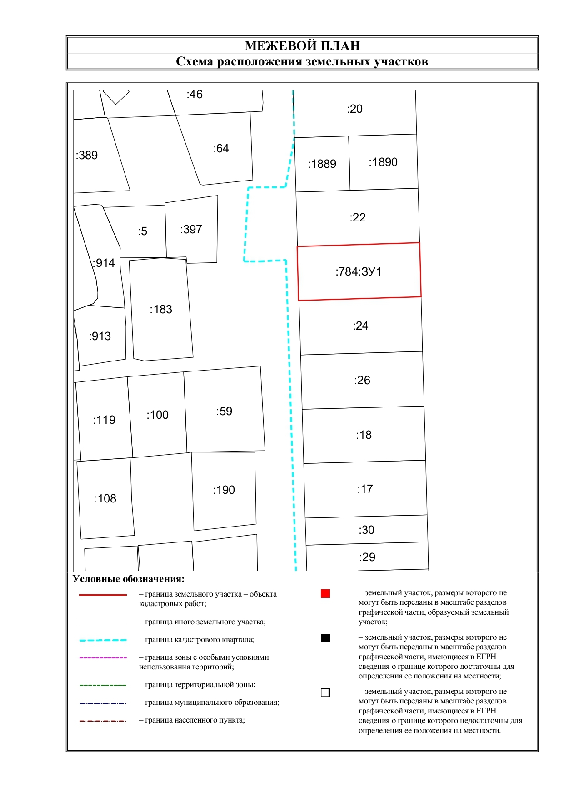

Межевой план

Без него нельзя:
- • зарегистрировать участок в Росреестре;
- • объединить или разделить участки;
- • уточнить границы земли;
- • устранить ошибки в ЕГРН;
- • оформить участок в собственность (например, при приватизации);
- • продать или подарить землю, если она не стоит на учёте или границы не уточнены.
Ростов-на-Дону и Ростовская область
Плохо составленный межевой план может привести к отказу в регистрации, затягиванию сроков и даже судебным разбирательствам. Мы готовим межевые планы точно по требованиям Росреестра, с сопровождением на всех этапах — от замеров до внесения в ЕГРН.